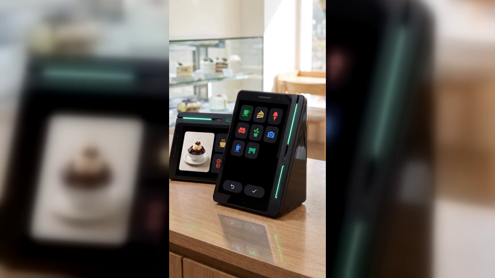

리뷰 부탁하지 않고 네이버 리뷰 쌓는 방법 — 결제하는 그 자리에서 이어집니다
결론부터 말씀드리면, 리뷰는 부탁해서 쌓이는 것이 아닙니다.
결제하는 그 자리에서 이어지게 두면 쌓입니다.
장사는 잘 되는데 검색해 보면 리뷰가 몇 개 없는 매장이 많습니다.
사장님이 게을러서가 아닙니다. "리뷰 한 번만 부탁드려요"라는 말을
손님 한 분 한 분께 매번 꺼내는 일이 생각보다 어렵기 때문입니다.
바쁜 시간에는 말할 틈이 없고, 한가한 시간에는 부담스럽습니다.
말을 꺼내도 대부분은 "네" 하고 나가서 그대로 잊습니다.
그렇게 매장의 실제 실력과 검색 결과가 점점 벌어집니다.
리뷰를 남기려면 손님이 세 가지를 해야 합니다.
가게를 기억해 두었다가, 앱을 열어 매장을 찾아 들어가고, 쓸 말을 생각해야 합니다.
계산을 마치고 가게 문을 나서는 순간 이 세 가지는 대부분 무너집니다.
기분이 좋았던 감정은 몇 분이면 옅어지고, 저녁이 되면 다른 일이 밀려옵니다.
게다가 글로 남기는 일은 짧아도 부담입니다.
무슨 말을 써야 할지 고민하다가 창을 닫는 손님이 많습니다.
결국 문제는 손님의 성의가 아니라, 리뷰를 남기는 순간이
매장에서 너무 멀리 떨어져 있다는 순서의 문제입니다.
네이버페이 커넥트(네이버단말기)는 손님이 결제를 마치면
그 화면에서 네이버 리뷰로 바로 연결되는 스마트 사인패드입니다.
사장님이 따로 부탁하지 않아도, 결제와 동시에 리뷰를 받을 수 있습니다.
손님이 카드를 챙기고 영수증을 기다리는 그 몇 초가 리뷰를 남기는 시간이 됩니다.
방식도 글쓰기가 아닙니다. 손님은 화면에 뜨는 키워드 중에서 고르기만 하면 됩니다.
"커피가 맛있어요", "인테리어가 멋져요" 같은 항목을 눌러서 남기는 방식이라
무슨 말을 쓸지 고민할 필요가 없습니다.
그리고 키워드 리뷰를 남기면 네이버페이 포인트가 적립되고 쿠폰이 함께 제공됩니다.
손님에게는 남길 이유가 생기고, 그 쿠폰은 다시 매장으로 돌아오는 이유가 됩니다.
기기는 카운터에 올려두는 작은 크기입니다.
유광 검정 쐐기 모양에 커피컵 정도 높이라 계산대 자리를 크게 차지하지 않고,
따로 세우는 기둥 스탠드도 필요 없습니다.
화면이 둘이라 사장님이 보는 세로 화면과 손님이 보는 작은 화면이 나뉘어 있습니다.
손님 쪽 화면이 결제부터 리뷰까지 이어받기 때문에
사장님은 평소처럼 결제만 진행하시면 됩니다.
결제 수단도 그대로입니다. 카드와 QR·바코드는 물론
삼성페이 같은 간편결제, 페이스사인,
위챗페이·알리페이플러스 같은 해외 결제까지 한 대에서 받습니다.
쌓인 결제 데이터로 단골에게 쿠폰·적립·맞춤 혜택을 자동으로 보내는 기능,
손님이 매장에 머무는 동안 매장 소식과 이벤트를 알리는 기능도 함께 들어 있습니다.
네이버 공식 안내에는 앞으로도 매장 운영에 도움이 될 새로운 기능이
추가될 예정이라고 되어 있습니다(일부 서비스는 오픈 준비 중입니다).
리뷰는 장사를 잘한 결과가 아니라 다음 손님을 데려오는 통로입니다.
그 통로를 손님의 기억력에 맡기면 대부분 끊깁니다.
부탁하는 대신, 결제 화면이 이어받게 해 두십시오.
오늘 계산한 손님 한 분이 다음 주 손님을 부르는 자리로 바뀝니다.
네이버단말기(Npay 커넥트)는 결제가 끝난 자리에서 네이버 리뷰·쿠폰·적립이 이어지는
스마트 사인패드입니다. 쓰던 포스는 그대로 두고 연결만 합니다.
· 상담 문의 · A/S 접수 — 평일 9시~20시 / 토·일·공휴일 11시~17시
· 정품 신제품 보증 · 수도권 직영 설치
누리네트웍스 · 결제는 더 쉽게, 매장은 더 스마트하게
🔗 https://nwpos.co.kr?utm_source=youtube&utm_medium=social&utm_campaign=daily7&utm_content=connect-review
#네이버단말기 #네이버커넥트 #Npay커넥트 #네이버페이단말기 #네이버리뷰 #매장리뷰 #리뷰이벤트 #키워드리뷰 #단골관리 #쿠폰적립 #포인트적립 #사인패드 #결제단말기 #카드단말기 #포스기 #간편결제 #카드결제 #매장운영 #매장관리 #자영업 #소상공인 #자영업노하우 #개인사업자 #가맹점 #창업준비 #누리포스 #누리네트웍스 #Shorts
[SNS아이콘]
[SNS배너]